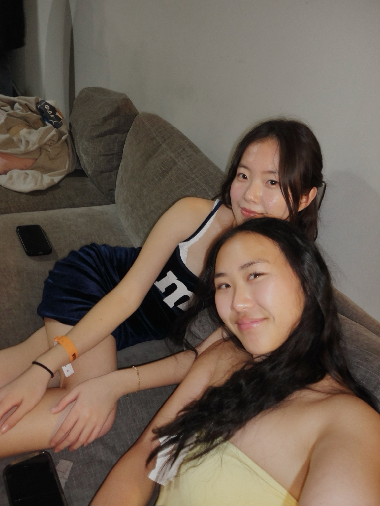
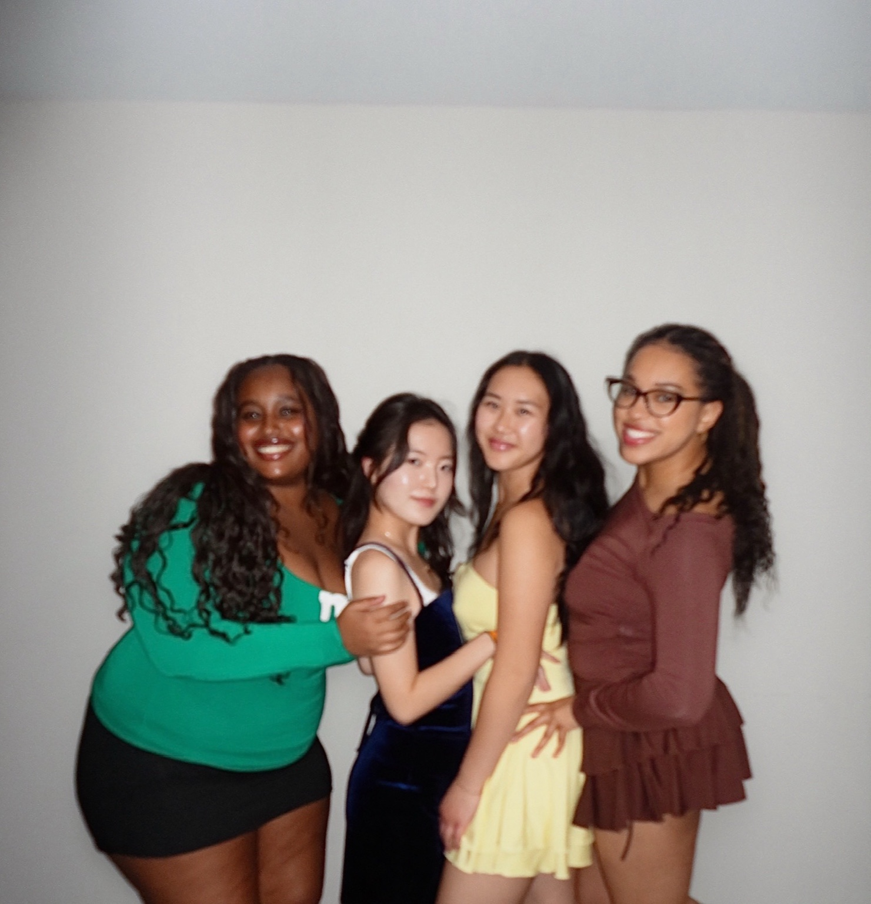

Introduction
As you might know, Halloweekend just ended. That means that Instagram will be flooded with posts from college students in their costumes taken in their natural habitat: parties. I am one of them. Because I like my feed to be have a certain aesthetic and vibe to all my photos, I decided to recruit ChatGPT for help.
The prompt I asked ChatGPT was: “what songs should i post my post about halloween party to on instagram?” I believe this is a pretty fair question to ask as ChatGPT has access to numerous posts from Instagram and can analyze the general trend and know what I am looking for.
ChatGPT’s Response
Here are some great Halloween-party-post songs depending on the vibe you want — from playful to mysterious to full-on chaos:
🎃 Fun / Flirty Halloween Energy
- “Super Freaky Girl” – Nicki Minaj
- “Dance the Night” – Dua Lipa (Barbie-core but still fits a sparkly costume vibe)
- “Just Dance” – Lady Gaga
- “7 rings” – Ariana Grande (works if your outfit was glam or coordinated with friends)
- “Sweet but Psycho” – Ava Max
🕷️ Dark / Cool-Girl Aesthetic
- “MONTERO (Call Me By Your Name)” – Lil Nas X
- “bury a friend” – Billie Eilish
- “After Dark” – Mr. Kitty (moody and cinematic)
- “Toxic” – Britney Spears (iconic and always hits on Halloween)
- “you should see me in a crown” – Billie Eilish
💀 Classic Halloween Bangers
- “Disturbia” – Rihanna
- “Heads Will Roll (A-Trak Remix)” – Yeah Yeah Yeahs
- “Somebody’s Watching Me” – Rockwell
- “Ghostbusters” – Ray Parker Jr. (if you’re going campy or funny)
- “Monster Mash” – Bobby Pickett (for a throwback, ironic tone)
🩸 Rave / Chaos Vibe (for party clips, strobe lights, crowd shots)
- “Rumble” – Skrillex, Fred again.. & Flowdan
- “Praise the Lord (Da Shine)” – A$AP Rocky ft. Skepta
- “SKELETONS” – Travis Scott
- “I’m Good (Blue)” – David Guetta & Bebe Rexha
- “Starboy” – The Weeknd
If you tell me what your costume was and the mood of your photos (e.g. cute / hot / chaotic / mysterious / friend-group), I can give you specific song suggestions that would perfectly match the energy. Want to do that?
My Response
Instead of answering ChatGPT’s question, I decided to upload the photos I will be posting, directly into the algorithm. These are the photos:
 
I then said, “give me more. these are the photos.”
ChatGPT’s Last Response
These photos give off a fun, confident, and effortlessly hot friend-group vibe — matching fits, playful energy, and warm lighting. Here are some song recs that would really fit an Instagram post like this, depending on the direction you want to go:
💋 Flirty + Confident (Hot-Girl Halloween Energy)
- “Don’t Stop the Music” – Rihanna
- “Material Gworrllllllll!” – Saucy Santana
- “Vegas” – Doja Cat
- “Get Into It (Yuh)” – Doja Cat
- “Rich Baby Daddy” – Drake ft. SZA & Sexyy Red (perfect if you want current, fun, chaotic energy)
🌙 Chill / Cute Party Recap
- “Die For You (Remix)” – The Weeknd & Ariana Grande
- “Lover (Remix)” – Taylor Swift ft. Shawn Mendes (if you want it softer or more sentimental)
- “Sunflower” – Post Malone & Swae Lee (if the vibe is more laid-back post-party)
- “Pink + White” – Frank Ocean (for warm-toned, cozy lighting edits)
🧃 Trendy + Aesthetic Sounds (TikTok-Core Energy)
- “cool with you” – NewJeans
- “Slomo” – Chanel
- “One of Your Girls” – Troye Sivan
- “Feather” – Sabrina Carpenter
- “On My Mama” – Victoria Monét (SO good for confident group photos)
🔥 If You Want It to Feel Like a Movie / Edit
- “Starboy” – The Weeknd
- “Supermodel” – Måneskin
- “Midnight City” – M83
- “Team” – Lorde
- “Money, Power, Glory” – Lana Del Rey
Would you like me to tailor the list to a specific vibe — like hot-girl Halloween, chill party recap, or cinematic edit energy? That’ll help narrow it down to the top 3–5 perfect songs for your post.
Takeaways
Unfortunately, none of the songs ChatGPT provided made the cut for me. All these songs are pretty basic and does not fit neither the aesthetic nor the vibe of what I am looking for. All these songs or either a little too trendy or isn’t “Halloweekend” enough for me.
While ChatGPT’s recommendations were thoughtful and organized by vibe, they ultimately felt too predictable. The lists leaned on mainstream pop and overused TikTok sounds that didn’t quite capture the energy I wanted for my Halloween post — something more moody, camp, and distinctly Halloweekend-coded.
What this experiment showed me, though, is that while AI can categorize aesthetics and trends well, it still struggles with nuance — especially when it comes to personal taste and the subtle cultural cues behind social media “vibes.” It can recognize patterns, but it can’t fully sense the irony, chaos, or micro-aesthetic that people curate during something as specific as Halloweekend.
In the end, I realized that part of the fun of posting is choosing the song yourself. Thus, I decided to post the photos without a music attached to them.